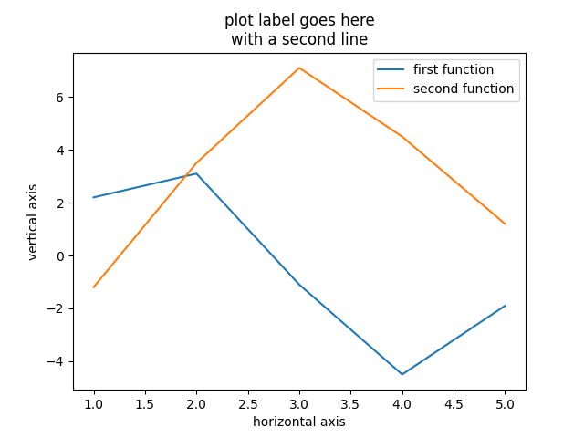
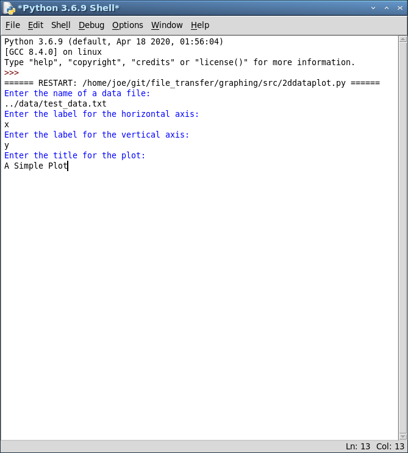
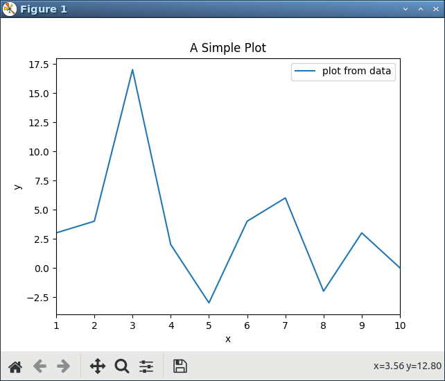
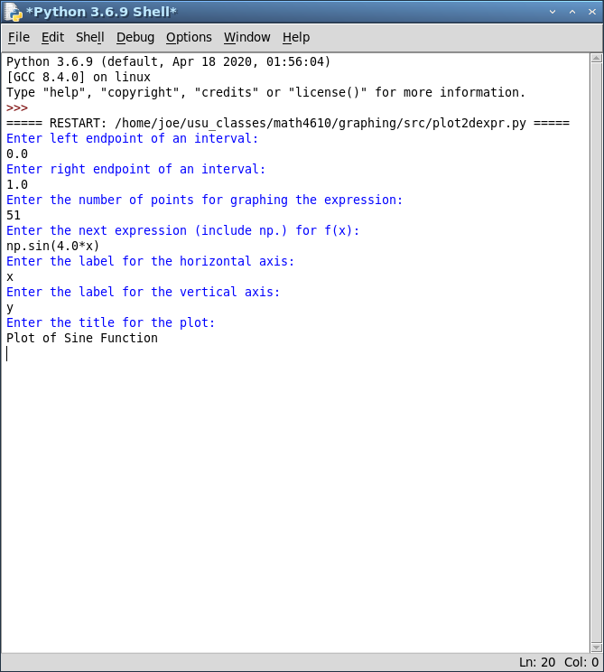
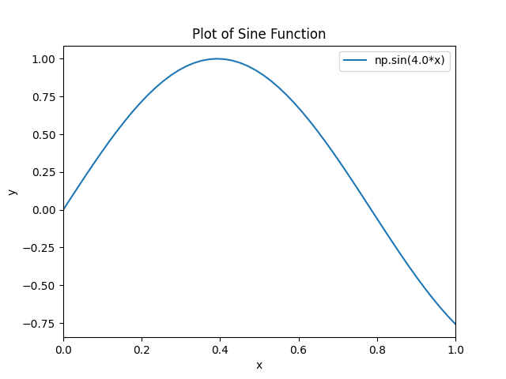

Math 4610 Fundamentals of Computational Mathematics - Topic 11.
In the last topic, a means for producing graphs for a single function that has
been hardwired into the Python module. It would be a lot better to have a module
or modules that can handle a little more generality in the function being
graphed. For this example, we might want to be able to enter a string that can
be used in place of the hardwired function with a general expression. The work
from the previous topic can be modified a bit to create a more general plotting
tool. In this topic, we will produce a couple of Python modules that will plot
(1) data from an input file and (2) use an input expression to produce a plot.
You might imagine that you have been asked to produce a certain type of
graphical output, say multiple data sets plotted on the same scale. The question
is how do you write a quick code to address the request made. In this topic, we
will consider two of these types of applications. The homework will ask students
to write code that will produce the requested plots. Students should be able to
modify the code in the two examples below to do the homework tasks.

A simple plot of two functions.
Plotting Data From An Existing File:
In this example, we will open and read a file into arrays of the coordinates
that represent ordered pairs. There is an age-old problem in the process of
loading data from a file system into a format that is recognized by the coding
language you use. As a simple example, Windows machines end lines using a
carriage return and Linux operating systems end lines in data files using the
new line character. These characters are usually hidden from you, but they are
really there. If you edit a file created using something like Notepad and then
open the file in vim the carriage return characters show up. If you go the other
way the new line characters are ignored and the lines are put one after the
other without breaks. There are a couple of commands that will transform back
and forth in this case. For example
koebbe% dos2unix filename
will transform the file and change carriage returns into new line characters.
This aside does not help with plotting functions. However, it is another little
trick that is worth knowing.
So, let's consider an input file that looks like:
Each line in the file represents an ordered pair. So, the third line in the file
represents the ordered pair \((3, 17)\). So, the trick is to read in the ordered
pairs and use them to generate a plot.
A Python code that will do just that is included here. Note that there are a few
inputs that are required.
from matplotlib import pyplot as plt
import numpy as np
#
# initialize two arrays to store the data in
# ------------------------------------------
#
xpts=[]
ypts=[]
#
# user inputs a string for the name of the file containing the data
# -----------------------------------------------------------------
#
datafilename = input('Enter the name of a data file:\n')
#
# the code expects ordered pairs, one per line in the file with a comma
# separator - this is a very simple format
# ----------------------------------------
#
xpts, ypts = np.loadtxt(datafilename, delimiter=',', unpack=True)
#
# the next block will ask for an expression for the data generation
# ------------------------------------------
#
# now that the data is set up, we can do the graphics in the lines below
#
# set the maximum and minimum values for the graphing below
# ---------------------------------------------------------
#
xmin = np.min(xpts)
xmax = np.max(xpts)
#
# set the limits on the plot on the horizontal axis
# -------------------------------------------------
#
plt.xlim(xmin, xmax)
#
# plot the data using matplotlib.pyplot
# -------------------------------------
#
plt.plot(xpts, ypts, label='plot from data')
#
# create labels for the two axes in the 2-d plot
# ----------------------------------------------
#
hlabel = input('Enter the label for the horizontal axis:\n')
plt.xlabel(hlabel)
vlabel = input('Enter the label for the vertical axis:\n')
plt.ylabel(vlabel)
#
# create a title for the plot
# ---------------------------
#
ptitle = input('Enter the title for the plot:\n')
plt.title(ptitle)
#
# create a legend for the plot, if needed
# ---------------------------------------
#
plt.legend()
#
# show the plot of the data
# -------------------------
#
plt.show()
#
Once the data file is identified, there are a couple of important lines that
transform the input into actual numerical values. The use of the numpy package
will cast the strings read from the file into numerical values. This is done
as the file is read, in the code line
Note that the syntax in Python allows the multiple assignment of array values.
xpts and ypts are initialized as arrays that allow an arbitrary number of values
to be appended to each.
In looking at the code, 4 inputs are required in order to have the code run to
completion. The one necessary input is the file name. The other three can be
anything including a blank string. So, as shown in the following figure, a file
name is input that accesses the ordered pairs given above. The labels are not
actually necessary. However, having labels always helps with graphs of
functions.

A simple 2-d plot of data in an external file.
The input needed to create the graph of the ordered pairs in the file are shown
in the following figure. Note that the data file is named
../data/test_data.txt
This means that the data is stored in a file one level up from the current
folder and in a folder named data. The name of the file is
"test_data.txt". This is the structure of the folders in the Math
4610 repository.

The input needed to run the module and produce the plot of the data.
Note that the code can be run on any data file that includes two columns of
numerical values with the two values separated by a single comma. The file is
known as a comma separated value (.csv) file and is common in many applications.
Plotting Data from an Input String:
When graphing a function using a string, the code in the previous topic can be
used as a starting point. Instead of using a single hardwired expression (the
logistic function) can be replaced with code to accept input from the user when
the plotting script is executed. A code written in Python that will do the work
is given below.
from matplotlib import pyplot as plt
import numpy as np
#
# initialize two arrays to store the data in
# ------------------------------------------
#
xpts=[]
ypts=[]
#
# get the endpoints of the interval that defines the graphical domain
# --------------------------------------------------------------------
#
xmin = input('Enter left endpoint of an interval:\n')
xmin = float(xmin)
xmax = input('Enter right endpoint of an interval:\n')
xmax = float(xmax)
#
# get the number of points for graphing the expression given
# ----------------------------------------------------------
#
nvals = input('Enter the number of points for graphing the expression:\n')
nvals = int(nvals)
delx = ( xmax - xmin ) / float(nvals)
i = 0
while i<=nvals:
x = xmin + float(i) * delx
xpts.append(x)
i += 1
#
# now that the data is set up, we can do the graphics in the lines below
# ----------------------------------------------------------------------
#
plt.xlim(xmin, xmax)
#
# loop over the number of expressions specified
# ---------------------------------------------
#
expression = input('Enter the next expression (include np.) for f(x):\n')
#
# loop over the points, evaluating the expression
# -----------------------------------------------
#
i = 0
while i<=nvals:
x = xpts[i]
ypts.append(eval(expression))
i += 1
#
# plot the data using matplotlib.pyplot
# -------------------------------------
#
plt.plot(xpts, ypts, label=expression)
#
# create labels for the two axes in the 2-d plot
# ----------------------------------------------
#
hlabel = input('Enter the label for the horizontal axis:\n')
plt.xlabel(hlabel)
vlabel = input('Enter the label for the vertical axis:\n')
plt.ylabel(vlabel)
#
# create a title for the plot
# ---------------------------
#
ptitle = input('Enter the title for the plot:\n')
plt.title(ptitle)
#
# create a legend for the plot, if needed
# ---------------------------------------
#
plt.legend()
#
# show the plot of the data
# -------------------------
#
plt.show()
#
The inputs needed for the code are a bit different. In the code above, the user
is prompted for the minimum and maximum coordinates from the domain of the
function. The next thing that is needed is the number of points that will be
used to create the plot. The next crucial part of the code is the prompt for the
expression that defines the function. An example of the input needed is shown in
the next figure. Note that the input looks like the following line:
np.sin(4.0*x)
The "np" in front of the sine function indicates that the numpy
package is used to evaluate the sine function. The input of labels is the same
as the data file example earlier in this topic. The results of running the
script are shown in the last figure below.

Starting IDLE in a terminal emulator.

The plot generated by the Python code that accepts a string expression
that represents a function.
Previous
|
Table of Contents
|
Next